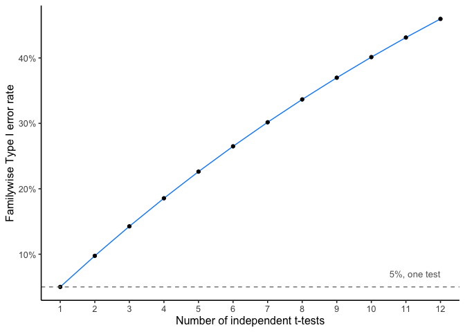
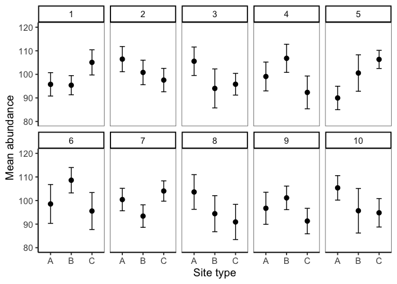
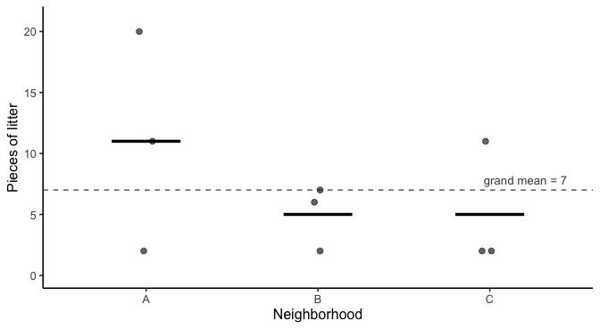
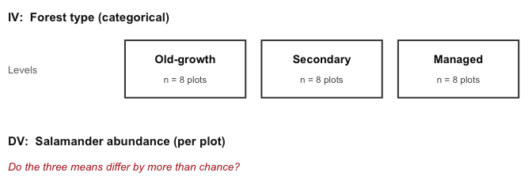
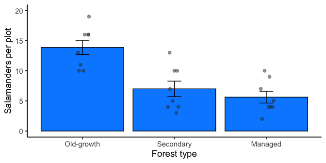
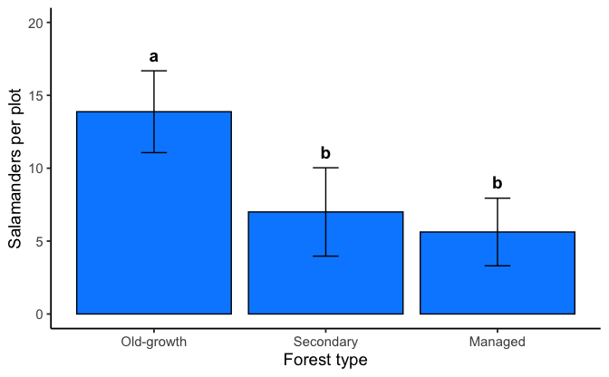
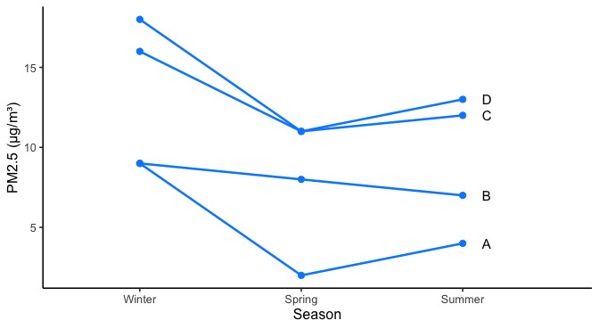

8 Analysis of Variance (ANOVA)
8.1 ANOVA is analysis of variance
ANOVA stands for analysis of variance. It tests whether the means of three or more groups differ by more than chance alone would produce. Chapters 6 and 7 compared two groups, and with two groups a \(t\)-test answers this question. Environmental studies often compare more than two, such as several sites, treatments, or time periods, and ANOVA extends the \(t\)-test’s logic to them.
This chapter starts with why running a \(t\)-test for every pair of groups goes wrong, and with the single question ANOVA asks instead. It then builds ANOVA’s test statistic, \(F\), as a ratio, shows what values \(F\) takes when there are no real differences, and computes \(F\) by hand for a small example. The full workflow on one example follows, through post-hoc comparisons and a rank-based (nonparametric) alternative, and the chapter ends with repeated-measures ANOVA.
NoteNote: Where ANOVA came from
Sir Ronald Fisher invented the ANOVA (Salsburg 2001) and wanted to publish it in the journal Biometrika. The editor at the time was Karl Pearson, of Pearson’s \(r\), and the two men disliked each other, so Pearson refused to publish the new test. Fisher published it in the Journal of Agricultural Science instead. The feud carried into the next generation. Years later, Karl Pearson’s son Egon Pearson, working with Jerzy Neyman, revamped Fisher’s ideas and re-cast them into what we now call null vs. alternative hypothesis testing. Fisher objected to that too.
8.1.1 Why not run multiple \(t\)-tests?
With three groups, A, B and C, there are three possible pairwise differences (Table 8.1). We could test each with a separate \(t\)-test, asking whether that pair’s means differ significantly.
| Pairwise \(t\)-test |
|---|
| Group A vs. Group B |
| Group A vs. Group C |
| Group B vs. Group C |
The problem is that every test carries its own 5% chance of a false positive (a Type I error, Chapter 5), and those chances accumulate across tests. This follows from the independence multiplication rule in Chapter 3. Each test has a \(1-\alpha = 0.95\) chance of avoiding a false positive. If the \(m\) tests are independent, the chance that all of them avoid one is 0.95 multiplied by itself \(m\) times, or \((1-\alpha)^m\). The chance of at least one false positive is 1 minus that, so for \(m\) independent tests at \(\alpha = 0.05\),
\[P(\text{at least one false positive}) = 1-(1-\alpha)^m.\]
With three groups, that’s three tests. The familywise error rate is the chance of at least one false positive across a set of tests. For three tests it is 14%, compared with 5% for a single test:
\[1-(1-0.05)^3 = 0.14.\]
With \(k\) groups there are \(k(k-1)/2\) pairs to compare, so the number of tests grows faster than the number of groups. Four groups give \(4 \times 3/2 = 6\) tests, and five groups give \(5 \times 4/2 = 10\) (Table 8.2).
| Number of groups (\(k\)) | Pairwise tests (\(m\)) | Familywise error rate |
|---|---|---|
| 3 | 3 | \(1-0.95^3=0.14\) |
| 4 | 6 | \(1-0.95^6=0.26\) |
| 5 | 10 | \(1-0.95^{10}=0.40\) |
Even with only five groups, there’s a 40% chance of turning up at least one “significant” difference somewhere purely by chance, even if every population mean is identical. Figure 8.1 shows how the chance of at least one false positive grows as the number of independent \(t\)-tests grows.
Pairwise \(t\)-tests that share a group are not fully independent, so for pairwise comparisons these rates run a little high. Simulating three groups of 10 with no real differences gives about 12% for three pairwise tests, 20% for four groups, and 29% for five. The rate still climbs quickly as groups are added.
ANOVA solves this by replacing the separate \(t\)-tests with one test, so the chance of a false positive stays at \(\alpha\).
8.1.2 ANOVA is an omnibus test
An omnibus test is a single test that covers several comparisons at once, and ANOVA is one. Instead of the three pairwise \(t\)-tests in Table 8.1, ANOVA asks one more general question about all three means:
- Null (\(H_0\)): no differences anywhere, \(\mu_A=\mu_B=\mu_C\).
- Alternative (\(H_a\)): a difference somewhere, in one of four patterns:
- \(\mu_A\neq \mu_B=\mu_C\) (A differs)
- \(\mu_B\neq \mu_A=\mu_C\) (B differs)
- \(\mu_C\neq \mu_A=\mu_B\) (C differs)
- \(\mu_A\neq \mu_B\), \(\mu_B\neq \mu_C\), and \(\mu_A\neq \mu_C\) (all three differ)
A large \(p\)-value means we don’t reject the hypothesis of no differences. Because the differences between the sample means could easily be due to chance, we have no evidence that the three population means differ. A small \(p\)-value (below \(\alpha\)) means we reject that hypothesis and conclude at least one group mean differs from the others. The omnibus test tells us whether the means differ, and a separate step tells us which ones.
8.1.3 Kinds of ANOVA
As with the \(t\)-test, different research designs call for different kinds of ANOVA.
The one-way ANOVA is the simplest version of the test. In ANOVA an independent variable is called a factor, and the groups it defines are its levels. A one-way ANOVA has one factor with two or more levels.
Table 8.3 sets the one-way ANOVA beside the two other kinds of ANOVA this book covers.
| ANOVA type | Factors and units | Design |
|---|---|---|
| One-way ANOVA | One factor with two or more levels, with different units in each group | Between-subjects |
| Repeated-measures ANOVA | One factor with two or more levels, with the same units measured at every level | Within-subjects |
| Two-way (factorial) ANOVA | Two factors, each with two or more levels, fully crossed (Chapter 10) | Factorial |
8.2 The \(F\) ratio
ANOVA’s test statistic is \(F\), named for Fisher, who invented ANOVA. Like \(z\) and \(t\), it divides a measure of effect by the variation that sampling error alone would produce (Chapter 4).
\[F = \frac{\text{measure of effect}}{\text{measure of error}}\]
The \(t\)-test puts a difference between two means over its standard error. \(F\) uses variances for both parts. It divides the variation between groups (how far the group means are from one another) by the variation within groups (how far individual scores are from their own group’s mean).
\[F = \frac{\text{Variation between groups}}{\text{Variation within groups}}\]
When the two are about the same size, \(F \approx 1\), and the group means differ no more than ordinary sampling noise would make them. When the between-group variation is much larger than the within-group variation, \(F\) climbs well above 1, which is evidence that the groups differ. When the between-group variation is smaller, \(F\) drops below 1. An \(F\) of 5 means the group means vary five times as much as within-group noise alone would make them vary, and an \(F\) of 0.6 means they vary less than that noise alone would typically produce. Both parts of \(F\) are variances, so “five times as much” compares squared distances, not raw distances.
With two groups, \(F\) is exactly the square of the pooled \(t\) from Chapter 6, \(t^2 = F\), which is why the two tests give the same \(p\)-value.
Figure 8.2 shows both situations with the same noise. The dashed line in each panel is the grand mean, the mean of all the scores across every group.
![Two side-by-side panels on the same vertical scale, each showing three groups of 12 jittered points with a group mean and 95% confidence interval, and a dashed horizontal line at the grand mean. A blue bracket beside Group A spans its points, labeled within, and is about the same height in both panels. Orange arrows run from the grand mean to each group mean, labeled between. In the left panel, labeled no real differences, the three means sit near 10 and the arrows are very short. In the right panel, labeled real differences, the means climb from about 10 to about 12 to about 16, and the arrows are long, especially for Group C.](08-ANOVA_files/figure-html/fig-8betweenwithin-1.png)
The within-group variation is the same in both panels. Group A’s scores span about 9 units, the length of the blue bracket. On the left, the three group means are all within about half a unit of the grand mean, so the between-group variation is small compared with the within-group variation, and \(F\) = 0.64. On the right, Group C’s mean is about 3 units above the grand mean, and \(F\) = 21.4. The within-group variation did not change, so the larger \(F\) comes entirely from the larger between-group variation.
8.3 \(F\) when \(H_0\) is true
Before computing \(F\) by hand, we need to know what values it takes when the null hypothesis is true, because that is what an observed \(F\) is compared against. The \(p\)-value for \(F\) means the same thing as for every other test we’ve covered. It is the probability of an \(F\) this large or larger if the null hypothesis (no real group differences) were true.
Since \(F\) is a sample statistic, we can find out how it behaves the same way we did for \(t\), by simulating it many times under the null. Consider a monitoring study with three site types (A, B, C) and 10 sampling plots per type, 30 in all, measuring species abundance at each plot. All 30 plots are drawn from one null population distribution (population mean \(\mu = 100\), \(\sigma = 10\)), so site type has no real effect, and any differences between the group means come from sampling error alone. We repeat this study 10,000 times and compute \(F\) each time. The histogram of those 10,000 \(F\)-values, in Figure 8.3, is the null distribution of \(F\) for this design. The null population distribution describes individual abundance scores. The null distribution of \(F\) describes the \(F\)-values, one per experiment.
Before you look. Each bar in Figure 8.3 counts \(F\)-values from these null studies. Decide whether most of them will fall near 0, near 1, or well above 1.

Most simulated \(F\)-values here fall near or below 1, because under the null the numerator and denominator of \(F\) estimate the same thing. All 30 plots come from one null population distribution with \(\sigma = 10\). The denominator of \(F\), the within-group variation, estimates \(\sigma^2\) from the spread of scores inside each group. The numerator, the between-group variation, estimates the same \(\sigma^2\) from how far the group means stray from the grand mean, since with no real effect, sampling variation is the only thing moving them. Two estimates of one variance give a ratio near 1. When the population means really differ, the numerator picks up those differences on top of \(\sigma^2\), and \(F\) grows. (Section 8.4 shows how each part is computed.) The \(F\) of 5 from Section 8.2 is rare under the null. Values that large occur in about 1% of the simulations.
The null distribution of \(F\) never goes below 0, because \(F\) is a ratio of two variances and variances can’t be negative. It is right-skewed.
From simulation to the \(F\) distribution. The blue dot-dash curve over the histogram is the \(F\) distribution, the theoretical distribution of \(F\) when the null hypothesis is true. Its shape is set by two degrees of freedom, the numerator \(df\) (\(k - 1 = 2\) for the three site types) and the denominator \(df\) (\(N - k = 30 - 3 = 27\), where \(N\) is the total number of plots). It is worked out from theory with no simulation, and it follows the histogram closely, so from here on we use the curve. Software does the same, and the \(p\)-value it reports for \(F\) comes from the \(F\) distribution for the design’s two \(df\)s.
8.3.1 Making decisions
To decide whether a real study’s \(F\) is too large to be explained by chance:
- Set \(\alpha = 0.05\).
- Find the critical value of \(F\) for the design’s two \(df\)s (in R,
qf(0.95, 2, 27)), the red line in Figure 8.3. - Reject \(H_0\) if the observed \(F\) is at or beyond it.
For 2 and 27 degrees of freedom the critical value is 3.35, and only 5% of the \(F\) distribution lies at or beyond it. The simulation agrees, with 4.8% of the 10,000 simulated \(F\)-values at or beyond 3.35. The \(F\)-test has one critical value, in the upper tail. Differences among the means in any direction make the numerator of \(F\) larger, so they all push \(F\) up, and a small \(F\) is consistent with \(H_0\). If we ran the same design for real (30 plots, 10 per site type), an observed \(F\) at or beyond 3.35 would lead us to reject \(H_0\) and conclude that mean abundance differs among site types. The critical value and the \(p\)-value give the same decision. \(F\) is at or beyond the critical value exactly when its \(p\)-value is at or below \(\alpha\).
8.3.2 What group means look like when \(F\) exceeds the critical value
The 10,000 simulated studies kept only each \(F\)-value, not the group means behind it. To see those means, we reran the same null simulation and kept the first 10 studies with \(F > 3.35\), shown in Figure 8.4. Every one of them was still drawn from the same null population distribution, with no real group differences. Rejecting the null whenever \(F\) clears 3.35 is the right long-run decision rule, but every one of these particular simulations would be a Type I error if we did.

In four of the ten panels in Figure 8.4, at least one pair of 95% confidence intervals doesn’t overlap, which looks like a convincing real difference. In the others, the means are still spread out enough for \(F\) to clear the critical value. When chance produces a pattern like these, the \(F\)-value is large and the \(p\)-value is small, so in the output a Type I error looks exactly like a real effect.
Studies like these ten are the 5% the critical value allows. One \(F\)-test keeps that chance at 5% for the whole set of groups, where the three separate \(t\)-tests in Table 8.1 would have raised it to about 12%. The same risk returns after a significant \(F\), when post-hoc comparisons test each pair of groups, and that is why those comparisons are adjusted (Section 8.5.4).
8.4 Computing \(F\) by hand
ANOVA splits the total variation in the data into two sources: variation between groups, which group membership can explain, and variation within groups, which it can’t. If we can measure those two parts separately, we can turn them into a ratio and get an \(F\)-value.
\[\text{Total variation} = \text{Variation between groups} + \text{Variation within groups}\]
To make that precise we need an actual measure of variation. As in Chapter 2, the measure is the sum of squares.
\[SS_\text{Total} = SS_\text{Between} + SS_\text{Within}\]
The next sections compute each piece for a small example with nine scores. We find \(SS_\text{Total}\) and \(SS_\text{Between}\), get \(SS_\text{Within}\) by subtraction, and check it directly. Then we divide each sum of squares by its degrees of freedom, take the ratio to get \(F\), and compare it with its critical value.
8.4.1 Nine litter counts
Suppose a city counts the pieces of litter along nine stretches of sidewalk, three in each of three neighborhoods, A, B, and C. The counts are invented. Each count is one score. Table 8.4 lists them by neighborhood, with each neighborhood’s mean and the grand mean, the mean of all nine scores.
| Neighborhood | Scores | Group mean |
|---|---|---|
| A | 20, 11, 2 | 11 |
| B | 6, 2, 7 | 5 |
| C | 2, 11, 2 | 5 |
| All nine | 7 (grand mean) |
Figure 8.5 plots the same nine scores. Neighborhood A’s mean is above the grand mean, B’s and C’s are below it, and within each neighborhood the scores spread widely around their own mean. The tables in the next sections list them in long format, which means each row is a single score, the way R stores them.

8.4.2 SS Total
\(SS_\text{Total}\) measures all of the variation in the data, how far every score is from the grand mean. Each score’s distance from the grand mean is its deviation. Table 8.5 lists every deviation and its square.
| Neighborhood | Score | Deviation from grand mean | Squared deviation |
|---|---|---|---|
| A | 20 | 13 | 169 |
| A | 11 | 4 | 16 |
| A | 2 | -5 | 25 |
| B | 6 | -1 | 1 |
| B | 2 | -5 | 25 |
| B | 7 | 0 | 0 |
| C | 2 | -5 | 25 |
| C | 11 | 4 | 16 |
| C | 2 | -5 | 25 |
| Sums | 63 | 0 | 302 |
The deviations sum to zero, because the mean is the balancing point of the data, so their sum can’t measure spread. Squaring turns every deviation positive and, as a side effect, weights larger deviations more heavily.
Adding up the squared deviations gives the sum of squares (SS) from Chapter 2. Writing \(Y_{ij}\) for score \(i\) in group \(j\) and \(\bar{Y}_\text{grand}\) for the grand mean,
\[SS_\text{Total} = \sum (Y_{ij} - \bar{Y}_\text{grand})^2 = 302.\]
That is the first piece of the partition:
\[SS_\text{Total} = SS_\text{Between} + SS_\text{Within}, \qquad 302 = SS_\text{Between} + SS_\text{Within}.\]
We only need to compute one of the two remaining pieces directly. The other follows by subtraction.
8.4.3 SS Between
\(SS_\text{Total}\) captured all of the variation in the data. \(SS_\text{Between}\) is the part of the total variation that group membership can explain. It measures how far each group’s mean is from the grand mean.
To find it, replace every score with its own group’s mean (Table 8.6), then square and sum each group mean’s distance from the grand mean. Writing \(\bar{Y}_j\) for the mean of group \(j\) and \(n_j\) for its number of scores,
\[SS_\text{Between} = \sum_j n_j(\bar{Y}_j - \bar{Y}_\text{grand})^2.\]
The \(n_j\) is there because every score in group \(j\) is replaced by the same group mean, so each group’s squared distance counts once per score. Here every group has 3 scores. With unequal groups, larger groups count more.
| Neighborhood | Score | Group mean | Group mean minus grand mean | Squared |
|---|---|---|---|---|
| A | 20 | 11 | 4 | 16 |
| A | 11 | 11 | 4 | 16 |
| A | 2 | 11 | 4 | 16 |
| B | 6 | 5 | -2 | 4 |
| B | 2 | 5 | -2 | 4 |
| B | 7 | 5 | -2 | 4 |
| C | 2 | 5 | -2 | 4 |
| C | 11 | 5 | -2 | 4 |
| C | 2 | 5 | -2 | 4 |
| Sums | 63 | 63 | 0 | 72 |
In the group mean column, Group A’s mean is 11, so there are three 11s, one per score in group A. Groups B and C both average to 5, so the rest of the column is 5s.
Within a group every value is now identical, so this column throws away the individual variation inside each group and keeps only the differences between groups, which is what \(SS_\text{Between}\) measures.
Plugging the group means into the formula gives
\[SS_\text{Between} = 3(11-7)^2 + 3(5-7)^2 + 3(5-7)^2 = 48 + 12 + 12 = 72.\]
\(SS_\text{Within}\) is a sum of squares, so it cannot be negative. That means \(SS_\text{Between}\) can never be larger than \(SS_\text{Total}\), and here 72 is smaller than 302.
8.4.4 SS Within
We already have \(SS_\text{Total} = 302\) and \(SS_\text{Between} = 72\), so we can solve for \(SS_\text{Within}\) by subtraction:
\[SS_\text{Within} = SS_\text{Total} - SS_\text{Between} = 302 - 72 = 230.\]
We can also calculate \(SS_\text{Within}\) directly from the data (Table 8.7), both to see where it comes from and to check the subtraction.
\[SS_\text{Within} = \sum (Y_{ij} - \bar{Y}_j)^2\]
| Neighborhood | Score | Group mean | Score minus group mean | Squared |
|---|---|---|---|---|
| A | 20 | 11 | 9 | 81 |
| A | 11 | 11 | 0 | 0 |
| A | 2 | 11 | -9 | 81 |
| B | 6 | 5 | 1 | 1 |
| B | 2 | 5 | -3 | 9 |
| B | 7 | 5 | 2 | 4 |
| C | 2 | 5 | -3 | 9 |
| C | 11 | 5 | 6 | 36 |
| C | 2 | 5 | -3 | 9 |
| Sums | 63 | 63 | 0 | 230 |
The fourth column is the difference between each score and its own group mean, and the last column squares it. Summing the last column gives \(SS_\text{Within} = 230\), the same value we got by subtraction.
\(SS_\text{Within}\) has several other names. It is also called the error sum of squares, since it is the variation left over after group membership has explained what it can. R labels its row Residuals. In the next sections we divide it by its degrees of freedom to get \(MS_\text{Within}\), which some articles report as \(MSE\) (mean squared error).
8.4.5 Degrees of freedom
Degrees of freedom work the same way here as for the \(t\)-test. Every time we estimate something from the data, we use up a degree of freedom.
\(df_\text{Between} = k-1\), where \(k\) is the number of groups. With \(k=3\), \(df_\text{Between}=3-1=2\). Once we fix the grand mean, two of the three group means are free to be anything, but the third is determined by the other two.
\(df_\text{Within} = N-k\), where \(N\) is the total number of scores. With \(N=9\) and \(k=3\), \(df_\text{Within}=9-3=6\). Estimating the 3 group means uses up 3 degrees of freedom, one per group. Within each group, the deviations from the group mean must sum to zero, so only 2 of a group’s 3 deviations are free to vary. Three groups with 2 free deviations each give \(df_\text{Within} = 6\).
\(df_\text{Total} = N-1\), and it splits the same way the sums of squares do: \(df_\text{Total} = df_\text{Between} + df_\text{Within}\), here \(8 = 2 + 6\).
8.4.6 Mean squares
We’re building toward \(F=\dfrac{\text{measure of effect}}{\text{measure of error}}\), and the first idea is to divide \(SS_\text{Between}\) by \(SS_\text{Within}\) directly. The problem is that each sum of squares grows with the number of free pieces that go into it, its degrees of freedom. \(SS_\text{Between}\) comes from 3 group means, which have 2 degrees of freedom, and \(SS_\text{Within}\) comes from 9 deviations with 6 degrees of freedom. Even with no real differences, \(SS_\text{Within}\) would tend to be about three times as large as \(SS_\text{Between}\) for that reason alone. Dividing each one by its degrees of freedom turns it into an average, and two averages can be compared directly.
A mean square is a sum of squares divided by its degrees of freedom. We divide by degrees of freedom rather than by \(n\), because each group mean we estimate uses up a degree of freedom, as the previous section showed.
\[MS_\text{Between} = \frac{SS_\text{Between}}{df_\text{Between}} = \frac{72}{2} = 36\]
\[MS_\text{Within} = \frac{SS_\text{Within}}{df_\text{Within}} = \frac{230}{6} = 38.33\]
Both are variances. \(MS_\text{Within}\) measures how much individual scores vary around their own group’s mean. \(MS_\text{Between}\) measures how much the group means vary, multiplied by the number of scores per group. Here the group means 11, 5 and 5 have variance
\[\frac{(11-7)^2 + (5-7)^2 + (5-7)^2}{3-1} = \frac{24}{2} = 12,\]
and \(3 \times 12 = 36\), which is \(MS_\text{Between}\). The multiplication is needed because a mean of \(n\) scores varies less than a single score does. The variance of a mean is \(\sigma^2/n\), the squared standard error from Chapter 3. Multiplying by \(n\) puts \(MS_\text{Between}\) on the same scale as \(MS_\text{Within}\).
8.4.7 Calculate \(F\)
With \(MS_\text{Between}\) and \(MS_\text{Within}\) in hand, \(F\) is their ratio:
\[F = \frac{MS_\text{Between}}{MS_\text{Within}} = \frac{36}{38.33} = 0.94\]
8.4.8 The ANOVA table
An ANOVA table lists the sums of squares, degrees of freedom, mean squares, and \(F\) for each source of variation. Table 8.8 gives the formulas, and Table 8.9 fills them in for the toy data.
| Source | df | SS | MS | F |
|---|---|---|---|---|
| Between groups | \(k-1\) | \(\sum_j n_j(\bar{Y}_j - \bar{Y}_\text{grand})^2\) | \(SS_\text{Between}/df_\text{Between}\) | \(MS_\text{Between}/MS_\text{Within}\) |
| Within groups | \(N-k\) | \(\sum (Y_{ij} - \bar{Y}_j)^2\) | \(SS_\text{Within}/df_\text{Within}\) | |
| Total | \(N-1\) | \(\sum (Y_{ij} - \bar{Y}_\text{grand})^2\) |
| Source | df | SS | MS | F | p |
|---|---|---|---|---|---|
| groups | 2 | 72 | 36.00 | 0.94 | 0.442 |
| Residuals | 6 | 230 | 38.33 |
R labels the two rows groups (the between-groups row: what the means can explain) and Residuals (the within-groups row: what they can’t). Other software uses slightly different labels for the same two rows. R leaves out the Total row. Apart from the \(p\)-value in the last column, the table contains only numbers we already computed, and \(MS_\text{Between}\) (36) divided by \(MS_\text{Within}\) (38.33) gives the \(F\)-value.
With \(F = 0.94\), the group means vary no more than the noise within groups would make them vary. The critical value of \(F\) at \(\alpha = 0.05\) for 2 and 6 degrees of freedom is 5.14 (qf(0.95, 2, 6)), and 0.94 is far below it, so we fail to reject \(H_0\), as in Section 8.3. R’s \(p\)-value, 0.44, gives the same decision. These nine scores give no evidence that the neighborhoods differ.
8.5 The full ANOVA workflow
In practice, software computes the ANOVA table. We computed one by hand so that each number in the table has a meaning when we read it.
The following example applies the full ANOVA workflow, from descriptive summaries through the omnibus \(F\) test to post-hoc comparisons, to a salamander study.
8.5.1 Salamander abundance across forest types
Plethodontid salamanders are sensitive indicators of forest condition, because they depend on moist microhabitats, abundant coarse woody debris, and stable soil temperatures, all features that decline with forest disturbance. A field ecologist surveys salamander abundance across three forest types, laid out in Figure 8.6. The counts in this example are invented. We built them so that old-growth plots average about 14 salamanders, secondary forest about 7, and managed plantation about 5, with 8 plots of each type.

More groups mean more pairwise comparisons, which raises the familywise error rate from the start of the chapter.
The hypotheses are:
- Null (\(H_0\)): mean salamander abundance is the same in all three forest types, \(\mu_\text{Old-growth} = \mu_\text{Secondary} = \mu_\text{Managed}\).
- Alternative (\(H_a\)): at least one forest type’s mean differs.

The bar graph shows a gradient. Old-growth plots have the highest mean abundance, managed plantations the lowest, and secondary forest is in between. The individual plot counts (dots) spread widely within each forest type. Old-growth plots range from 10 to 19 salamanders and secondary plots from 3 to 13, so even where a real difference exists, individual plots from different forest types overlap.
8.5.2 Checking ANOVA’s assumptions
Before running the ANOVA, check whether its assumptions hold. Chapter 6 introduced independence as the assumption every test in this book shares, so we do not list it again here. ANOVA adds two assumptions of its own.
The first is homogeneity of variance, which means the groups have roughly equal spread around their own means. The second is approximately normal residuals. In ANOVA the model predicts each score with its group mean, so a residual is the score minus its group mean, the same idea as the residuals in Chapter 2. Here each residual is a plot’s count minus its forest type’s mean, the same deviations that make up \(SS_\text{Within}\), and the residuals should be roughly bell-shaped. Both matter because the \(F\)-test pools the within-group spread of every group into one error variance, \(MS_\text{Within}\), and then compares \(F\) to a null distribution that assumes normal residuals. Pooling only makes sense when the groups have similar spread.
Levene’s test (Levene 1960; Brown and Forsythe 1974) checks homogeneity of variance. Its null hypothesis is that every group has the same variance, so a small \(p\)-value is evidence that the spreads differ. It reports its own \(F\) statistic, separate from the ANOVA’s \(F\). The Shapiro-Wilk test from Chapter 6 checks normality, here applied to the residuals.
car::leveneTest(abundance ~ forest_type, data = salamander_df)| Statistic (F) | df | df residual | p |
|---|---|---|---|
| 0.52 | 2 | 21 | 0.599 |
The residuals come from the fitted model, so we fit the ANOVA first and set its table aside until the checks are done.
aov_out <- aov(abundance ~ forest_type, data = salamander_df)
shapiro.test(residuals(aov_out))| Statistic (W) | p |
|---|---|
| 0.93 | 0.078 |
Levene’s test gives \(F(2, 21) = 0.52\), \(p = 0.599\), so there is no evidence of unequal variance across forest types. The Shapiro-Wilk test (Shapiro and Wilk 1965) on the model’s residuals gives \(W = 0.93\), \(p = 0.078\), so there is no evidence against normality either. Both checks agree with the individual plots in Figure 8.7, which show similar spread across groups and no outliers far from the rest.
Formal assumption tests are evidence, not a gate. Chapter 6 made this point about Shapiro-Wilk, and it holds for Levene’s test too. It’s tempting to treat Levene’s test as a strict gate, where significant means “stop” and not significant means “proceed.” With a small sample (exactly when a violated assumption matters most), these tests have low power and will often say “no problem” even when there is one. With a very large sample (where ANOVA is fairly robust to mild violations anyway), they have high power and will flag trivial differences as “significant.” Look at the data too, as we did with Figure 8.7 above.
In practice, one-way ANOVA’s \(p\)-values stay close to correct under mild departures from these assumptions, especially when the design is balanced, with the same number of observations in every group, as here (8 plots per forest type). Be most cautious when small, unbalanced samples come with visibly skewed data or very different spreads. For very different spreads, use Welch’s ANOVA, and for skewed residuals in a small or unbalanced sample, use the Kruskal-Wallis test. Both are described below.
Table 8.10 lists each assumption, how to check it, and what to use if it fails.
| Assumption | How to check | If it fails |
|---|---|---|
| Approximately normal residuals | Shapiro-Wilk test on the residuals, and a look at the scores in each group (Figure 8.7) | Kruskal-Wallis test |
| Homogeneity of variance | Compare the spread of each group in a plot, and Levene’s test | Welch’s ANOVA |
With the assumptions reasonable, we run the one-way ANOVA to test whether these differences are larger than expected by chance alone.
summary(aov_out)| Source | df | SS | MS | F | p |
|---|---|---|---|---|---|
| forest_type | 2 | 312.58 | 156.29 | 14.60 | < 0.001 |
| Residuals | 21 | 224.75 | 10.70 |
Table 8.11 gives the result. With 3 forest types and 24 plots, the degrees of freedom are \(3 - 1 = 2\) and \(24 - 3 = 21\), and the critical value at \(\alpha = 0.05\) is 3.47, a little higher than the 3.35 for 30 plots because the error term has fewer degrees of freedom. Our \(F\) of 14.60 is more than four times that cutoff. Values this large arise by chance less than 0.1% of the time, so we reject the null hypothesis that all three group means are equal.
8.5.3 Effect size: eta-squared
The \(F\)-test answers whether the group means differ by more than chance would produce. It says nothing about how much of the variation in salamander abundance forest type explains. Chapter 5 made the same distinction, where \(p\) told us whether a difference was detectable and the effect size told us how large it was, in the study’s units or, with Cohen’s \(d\), in standard deviations. ANOVA adds a third kind, the share of the total variation that the groups explain.
ANOVA’s effect size is eta-squared (\(\eta^2\)), and we already computed both of its ingredients when we partitioned the sums of squares:
\[\eta^2 = \frac{SS_\text{Between}}{SS_\text{Total}} = \frac{SS_\text{Between}}{SS_\text{Between} + SS_\text{Within}}\]
\(SS_\text{Between}\) is the variation the group means explain and \(SS_\text{Total}\) is all the variation there is. So \(\eta^2\) is the proportion of the total variation in the response that the factor explains. It runs from 0 to 1.
| SS Between | SS Within | SS Total | Eta-squared |
|---|---|---|---|
| 312.58 | 224.75 | 537.33 | 0.582 |
Here \(\eta^2 = 0.58\) (Table 8.12), so forest type explains about 58% of the variation in salamander abundance across these 24 plots. The remaining 42% is within-group variation, the plot-to-plot differences that forest type alone cannot explain.
Regression (Chapter 9, the next chapter) uses the same quantity under the name \(R^2\). It also divides the total variation into a part the model explains and a part it leaves over, and reports the explained part as a proportion of the total.
Interpreting the number. Cohen’s conventional benchmarks are \(\eta^2 = 0.01\) (small), \(0.06\) (medium), and \(0.14\) (large), so 0.58 is a large effect by these benchmarks. Treat those cutoffs as rough orientation. What counts as a large effect depends on the system you are studying. An \(\eta^2\) of 0.10 would be unremarkable in a controlled greenhouse experiment and notable in a field survey where dozens of uncontrolled factors also drive the response.
\(p\) depends on sample size, and \(\eta^2\) does not. Survey enough plots and a difference of half a salamander per plot will clear \(p < 0.05\) while explaining almost none of the variation. Reporting both keeps a statistically detectable result from being mistaken for an ecologically meaningful one.
8.5.4 Post-hoc comparisons with Tukey HSD
The omnibus \(F\) test tells us that at least one group mean differs, but not which pairs, and the ANOVA table does not report the group means at all. Post-hoc comparisons are tests run after a significant omnibus test to find which pairs of groups differ. This is a different use of “post-hoc” from Chapter 5’s post-hoc power. To identify which forest types differ, we use Tukey’s Honestly Significant Difference (HSD) test (Tukey 1949). Tukey HSD compares every pair of groups while keeping the familywise error rate across all of the comparisons at \(\alpha\), so it is the standard choice after a significant ANOVA.
TukeyHSD(aov_out)| Comparison | diff | lwr | upr | p adj |
|---|---|---|---|---|
| Secondary-Old-growth | -6.88 | -11.00 | -2.75 | 0.001 |
| Managed-Old-growth | -8.25 | -12.37 | -4.13 | < 0.001 |
| Managed-Secondary | -1.37 | -5.50 | 2.75 | 0.683 |
Reading Table 8.13, column by column. Each row is one pairwise comparison, and there are three of them because three groups make three pairs.
diffis the difference in group means, computed as the first group in the row label minus the second:Secondary-Old-growthis secondary minus old-growth.lwranduprare the lower and upper bounds of the 95% confidence interval for that difference.p adjis the \(p\)-value after adjusting for the fact that you are making three comparisons at once. Because of this adjustment, the chance of at least one false positive across all three comparisons stays at 5%, compared with about 12% for three unadjusted pairwise tests.
Watch the sign. The row Secondary-Old-growth has a diff of \(-6.88\), and that negative sign does not mean secondary forest has more salamanders. It means secondary minus old-growth is negative, so old-growth is the higher of the two, by 6.88 individuals per plot. Always translate the sign back into a sentence naming which group is larger before you write anything down.
The confidence interval and the \(p\)-value say the same thing. A pair differs significantly at \(\alpha = 0.05\) exactly when its 95% interval excludes zero. Check both columns against each other as a habit: Secondary-Old-growth runs from \(-11.00\) to \(-2.75\), entirely below zero, and its \(p\) is 0.001. Managed-Secondary runs from \(-5.50\) to \(2.75\), straddling zero, and its \(p\) is 0.683. If they seem not to agree, reread that row.
So the three comparisons give:
- Old-growth vs. Secondary. Old-growth is higher by 6.88 individuals/plot, \(p = 0.001\), a significant difference.
- Old-growth vs. Managed. Old-growth is higher by 8.25 individuals/plot, \(p < 0.001\), a significant difference.
- Secondary vs. Managed. They differ by 1.37 individuals/plot, \(p = 0.683\), not a significant difference.
A non-significant difference is one the test could not detect. Secondary and managed plantation differ by 1.37 salamanders per plot in this sample. The test says that with eight plots per group, we cannot distinguish it from sampling noise. A larger study might well separate them. Report it as “we did not detect a difference,” never as “there is no difference.”
Compact letter display. A compact letter display summarizes post-hoc results with a letter above each group. With more than three groups, a list of pairwise sentences gets long, so this is the usual summary. Groups that share a letter were not significantly different, and groups that share no letter were. Figure 8.8 puts the salamander results in that form.

Old-growth gets its own letter because it differs from both of the others. Secondary and managed share a letter because the test could not separate them. Sometimes a group carries two letters, written “ab”. Suppose group 1 is labeled “a” and group 3 is labeled “b” because those two differ significantly. Group 2 has a mean between them. If group 2 does not differ significantly from group 1 or from group 3, it shares a letter with each, so it is labeled “ab”.
We built a difference of about 2 salamanders per plot between secondary forest and managed plantation into these invented counts, and the test could not detect it with 8 plots of each type.
ImportantResults reporting: one-way ANOVA
Report the direction in plain language, the test statistic with both degrees of freedom, \(p\), and the effect size, then which groups the post-hoc comparisons separated.
Salamander abundance differed significantly among forest types, \(F(2, 21) = 14.60\), \(p < 0.001\), \(\eta^2 = 0.58\). Tukey HSD comparisons showed more salamanders in old-growth plots than in secondary forest, by 6.88 per plot, 95% CI [2.75, 11.00], \(p = 0.001\), and than in managed plantation, by 8.25 per plot, 95% CI [4.13, 12.37], \(p < 0.001\). Secondary forest and managed plantation did not differ significantly, \(p = 0.683\).
Table 8.14 collects the one-way ANOVA on one card.
| Purpose | Do the means of two or more separate groups differ? One factor, different units in each group |
| Hypotheses | \(H_0: \mu_1 = \mu_2 = \cdots = \mu_k\) \(H_a\): at least one mean differs |
| Assumptions | Approximately normal residuals Similar spread in every group (homogeneity of variance) |
| Test statistic | \(F = MS_\text{Between}/MS_\text{Within}\) \(df_\text{Between} = k - 1\) \(df_\text{Within} = N - k\) |
| Report | \(F(df_\text{Between}, df_\text{Within})\) and \(p\) \(\eta^2 = SS_\text{Between}/SS_\text{Total}\) After a significant \(F\), Tukey HSD comparisons naming which groups differ |
8.5.5 Nonparametric alternative: the Kruskal-Wallis test
Our assumption checks above came back clean, so the ANOVA result stands as-is. Suppose instead the groups had visibly unequal spread. Then Welch’s ANOVA (oneway.test() in R) compares the means without assuming equal variances, the same fix Welch’s \(t\)-test makes in Chapter 6. If the residuals were clearly skewed in a small or unbalanced sample, the Kruskal-Wallis test (Kruskal and Wallis 1952) is the rank-based, nonparametric alternative to one-way ANOVA. It has the same relationship to ANOVA that the Mann-Whitney-Wilcoxon test has to the independent-samples \(t\)-test.
How it works, conceptually. Rank every observation across all groups together, from smallest to largest, ignoring group membership. Then check whether the average rank differs more across groups than chance alone would produce. If abundance differs among forest types, one group’s observations should occupy systematically higher or lower ranks than the others. In the salamander data, the old-growth plots have a mean rank of 19.7 out of 24, against 10.1 for secondary and 7.8 for managed. If forest type had no effect, all three mean ranks would be close to 12.5, the middle of 1 to 24.
Its assumption. Kruskal-Wallis assumes the groups’ distributions have roughly the same shape, and it does not require normality. When the shapes match, a significant result means the groups differ in location, meaning where the center of each distribution is, measured by the median, as with the Mann-Whitney-Wilcoxon test. If the shapes differ a lot, a significant result tells you the groups differ, but not whether that difference is in location, spread, or shape.
kruskal.test(abundance ~ forest_type, data = salamander_df)| Statistic (χ²) | df | p |
|---|---|---|
| 13.09 | 2 | 0.001 |
R reports the Kruskal-Wallis statistic as \(\chi^2\) because, when the null hypothesis is true, it approximately follows a chi-square distribution with \(k - 1 = 2\) degrees of freedom. Here \(\chi^2(2) = 13.09\), \(p = 0.001\), a significant result and the same conclusion as the ANOVA (\(F(2, 21) = 14.60\), \(p < 0.001\)).
Post-hoc comparisons. Just as a significant ANOVA needs Tukey HSD to identify which groups differ, a significant Kruskal-Wallis result needs its own follow-up. We run a Mann-Whitney-Wilcoxon test on each pair of groups and adjust the \(p\)-values with the Holm correction (Holm 1979), which keeps the familywise error rate across the comparisons at \(\alpha\).
pairwise.wilcox.test(salamander_df$abundance, salamander_df$forest_type,
p.adjust.method = "holm")| Group 1 | Group 2 | p |
|---|---|---|
| Secondary | Old-growth | 0.011 |
| Managed | Old-growth | 0.004 |
| Managed | Secondary | 0.486 |
The pattern matches Tukey HSD exactly. Old-growth forest differs significantly from both secondary forest (\(p = 0.011\)) and managed plantation (\(p = 0.004\)), while secondary forest and managed plantation do not differ from each other (\(p = 0.486\)). The two approaches use different assumptions and different calculations, and they agree here because the parametric assumptions held.
Table 8.15 collects the Kruskal-Wallis test on one card.
| Purpose | Do two or more separate groups differ? Skewed residuals in a small or unbalanced sample |
| Hypotheses | \(H_0\): group has no effect, so every group’s mean rank is close to the middle rank \(H_a\): at least one group ranks systematically higher or lower |
| Assumptions | Normality not required Reads as a difference in location (median) only when the groups’ distributions have similar shape |
| Test statistic | Rank all observations together Compare the mean ranks across groups R reports the statistic as \(\chi^2\) \(df = k - 1\) |
| Report | \(\chi^2(df)\) and \(p\) After a significant result, pairwise Mann-Whitney-Wilcoxon tests with a Holm correction |
8.6 Repeated-measures ANOVA
Every unit in the salamander study was measured once: 24 plots, 8 per forest type. Many environmental studies instead measure the same monitoring stations in every season or the same streams before, during, and after a drought. A repeated-measures (within-subjects) design measures the same units under every condition, and it calls for a repeated-measures ANOVA.
This is ANOVA’s version of the paired \(t\)-test from Chapter 6. The paired \(t\)-test subtracted each plot’s before score from its own after score, so differences between plots dropped out and only the change was left. With three or more conditions there is no single difference to take, so repeated-measures ANOVA does the equivalent with sums of squares, measuring how much the units differ from one another and removing that variation from the error term.
8.6.1 Fine particulate matter at four monitoring stations
An air quality agency has four PM2.5 monitoring stations, ordered from the most rural (A) to the most urban (D). The concentrations in this example are invented. Table 8.16 gives each station’s mean PM2.5 concentration in winter, spring, and summer. The question is whether concentrations differ by season.
- Null (\(H_0\)): mean PM2.5 is the same in every season, \(\mu_\text{Winter}=\mu_\text{Spring}=\mu_\text{Summer}\).
- Alternative (\(H_a\)): at least one seasonal mean differs.
| Station | Winter | Spring | Summer | Station mean |
|---|---|---|---|---|
| A | 9 | 2 | 4 | 5 |
| B | 9 | 8 | 7 | 8 |
| C | 16 | 11 | 12 | 13 |
| D | 18 | 11 | 13 | 14 |
| Season mean | 13 | 8 | 9 | 10 |

Figure 8.9 draws the same numbers, one line per station. Winter is the highest season at every station. But the stations themselves differ far more than the seasons do. Station A averages 5 µg/m³ and station D averages 14.
8.6.2 Splitting off the stations
A one-way ANOVA on these 12 numbers would split the variation into two pieces, as before. The grand mean is 10 and the season means are 13, 8, and 9. Each season mean counts once per station, so
\[SS_\text{Between} = 4\left[(13-10)^2 + (8-10)^2 + (9-10)^2\right] = 4(14) = 56.\]
Table 8.17 gives each value’s distance from the grand mean of 10.
| Station | Winter | Spring | Summer |
|---|---|---|---|
| A | \(-1\) | \(-8\) | \(-6\) |
| B | \(-1\) | \(-2\) | \(-3\) |
| C | 6 | 1 | 2 |
| D | 8 | 1 | 3 |
Squaring and summing the 12 distances, one season at a time, gives
\[SS_\text{Total} = (1 + 1 + 36 + 64) + (64 + 4 + 1 + 1) + (36 + 9 + 4 + 9) = 230,\]
which leaves \(SS_\text{Within} = 230 - 56 = 174\).
A one-way ANOVA would also break the independence assumption, because each station contributes three of the 12 numbers, and readings from the same station tend to be alike.
Repeated-measures ANOVA splits \(SS_\text{Within}\) one more time. Part of it is station-to-station variation. The units measured repeatedly are called subjects, even when they are stations, so this piece is \(SS_\text{Subjects}\), computed exactly like \(SS_\text{Between}\) but from the station means instead of the season means. Each station mean counts once per season, so
\[SS_\text{Subjects} = 3\left[(5-10)^2 + (8-10)^2 + (13-10)^2 + (14-10)^2\right] = 3(54) = 162.\]
Whatever is left is the error term:
\[SS_\text{Error} = SS_\text{Within} - SS_\text{Subjects} = 174 - 162 = 12,\]
so the full split is
\[SS_\text{Total} = SS_\text{Between} + SS_\text{Subjects} + SS_\text{Error}, \qquad 230 = 56 + 162 + 12.\]
\(SS_\text{Error}\) is the part of the within-season variation that the stations’ own levels can’t explain. It measures how much each station’s seasonal pattern departs from the average seasonal pattern. Its degrees of freedom are the one-way \(df_\text{Within}\) minus the degrees of freedom the four station means use up, where \(n\) is the number of stations:
\[\begin{aligned} df_\text{Within} &= N - k = 12 - 3 = 9 \\ df_\text{Subjects} &= n - 1 = 4 - 1 = 3 \\ df_\text{Error} &= 9 - 3 = 6 = (k-1)(n-1) \end{aligned}\]
\(F\) uses the same numerator as before, \(MS_\text{Between} = 56/2 = 28\). Only the denominator changes:
\[\begin{aligned} \text{One-way: } F &= \frac{28}{174/9} = \frac{28}{19.33} = 1.45 \\ \text{Repeated measures: } F &= \frac{28}{12/6} = \frac{28}{2} = 14.00 \end{aligned}\]
Figure 8.10 draws the two splits of the same 230, and Table 8.18 sets the two analyses side by side.
![Two horizontal stacked bars on one sum-of-squares axis from 0 to 230. The top bar, one-way, has an orange Between piece of 56 with 2 degrees of freedom and a blue Within piece of 174 with 9 degrees of freedom, and F equals 28 over 19.33, or 1.45. The bottom bar, repeated measures, has the same orange Between piece of 56, then a pale gray piece with a dashed outline labeled stations, removed from the error term, sum of squares 162 with 3 degrees of freedom, then a thin blue Error piece of 12 with 6 degrees of freedom, and F equals 28 over 2, or 14.00.](08-ANOVA_files/figure-html/fig-8pmpartition-1.png)
| Source | One-way df | One-way SS | One-way MS | Repeated-measures df | Repeated-measures SS | Repeated-measures MS |
|---|---|---|---|---|---|---|
| Season | 2 | 56 | 28 | 2 | 56 | 28 |
| Stations | 3 | 162 | 54 | |||
| Error | 9 | 174 | 19.33 | 6 | 12 | 2 |
| Total | 11 | 230 | 11 | 230 | ||
| \(F\) | 1.45 (\(p = 0.285\)) | 14.00 (\(p = 0.005\)) |
The repeated-measures test finds a significant seasonal effect, \(F(2, 6) = 14.00\), \(p = 0.005\). The one-way ANOVA would give \(F(2, 9) = 1.45\), \(p = 0.285\), and miss it. Removing the stations shrank the error mean square from 19.33 to 2, and \(F\) grew by the same factor. A repeated-measures design has more power than a between-subjects design with the same number of measurements when the units differ from one another, as monitoring stations usually do.
8.7 Chapter Summary
Why it matters. Comparing more than two groups with a separate \(t\)-test for each pair raises the chance of at least one false positive with every group added. ANOVA solves that by asking one omnibus question first, and its variance-partitioning logic is the same idea that reappears in regression, factorial designs, and ANCOVA.
Core ideas
- Many \(t\)-tests inflate the false-positive rate. Each comparison carries its own chance of a false positive, and they accumulate. With \(m\) comparisons, the familywise error rate for independent tests is \(1-(1-\alpha)^m\), which is already 14% for three tests.
- Partition the variation. Total variation splits into a piece explained by group membership (\(SS_\text{Between}\)) and unexplained residual variation (\(SS_\text{Within}\)).
- \(F\) is a ratio of the two. After dividing each sum of squares by its degrees of freedom to get a mean square, \(F = MS_\text{Between} / MS_\text{Within}\). A large \(F\) means between-group differences are large relative to within-group noise.
- Under \(H_0\), \(F\) is near 1. Both mean squares estimate the same \(\sigma^2\), so \(F\) follows an \(F\) distribution with \(df_\text{Between}\) and \(df_\text{Within}\). Differences in any direction make \(F\) larger, so the test has one critical value, in the upper tail.
- Run the omnibus test first, then post-hoc comparisons. The omnibus test asks whether any group means differ. If it is significant, run post-hoc comparisons (Tukey HSD) to find out which pairs differ.
- \(\eta^2\) is the effect size. \(SS_\text{Between}/SS_\text{Total}\) is the proportion of variation explained by the factor. It is the same quantity regression calls \(R^2\) (Chapter 9), and it does not depend on sample size the way \(p\) does, so report it alongside \(F\).
- Check the assumptions. ANOVA needs approximately equal variances across groups (Levene’s test) and roughly normal residuals. Treat formal tests as evidence rather than a gate, since they have least power exactly when small samples make violations matter most.
- When assumptions fail. Welch’s ANOVA handles unequal spread. The Kruskal-Wallis test is the rank-based alternative for skewed residuals in small samples, with
pairwise.wilcox.test()as its post-hoc counterpart. - Repeated measures. When the same units are measured under every condition, repeated-measures ANOVA splits \(SS_\text{Within}\) into \(SS_\text{Subjects}\) and a smaller \(SS_\text{Error}\). The smaller error term is why it has more power, the same reason the paired \(t\)-test does.